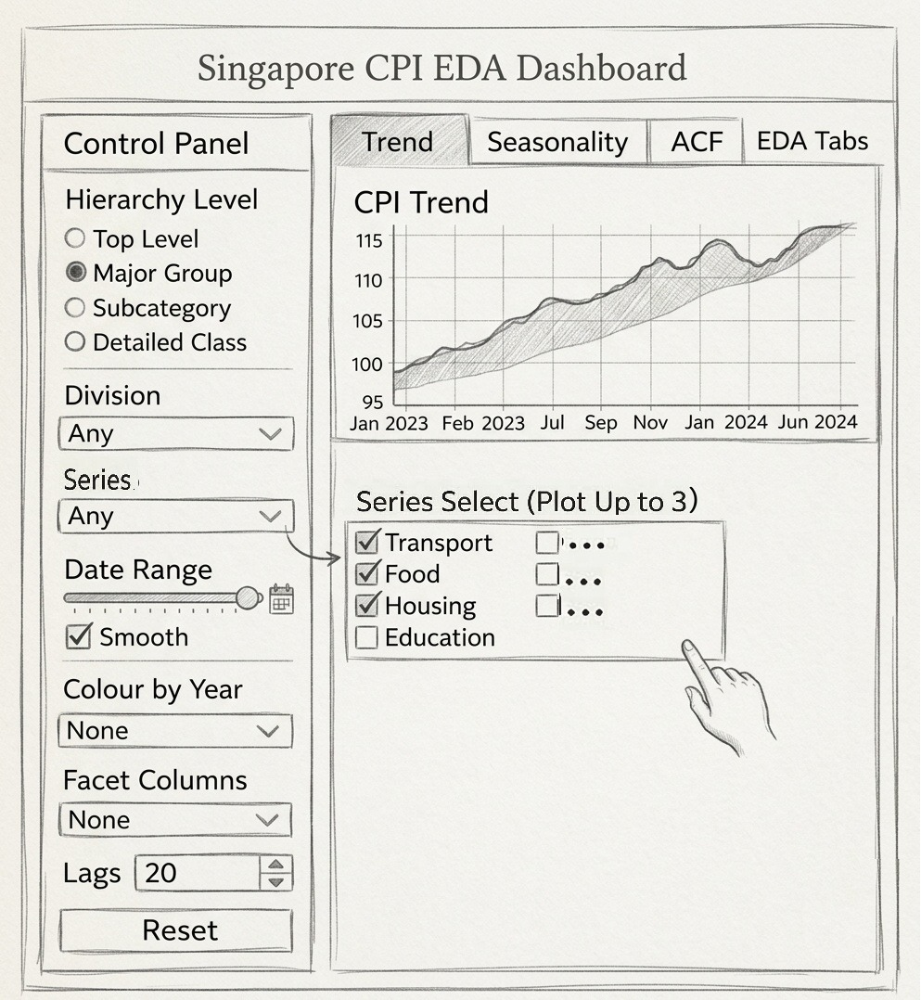

pacman::p_load(readxl, tidyverse, timetk,
modeltime, tidymodels,
lubridate, anomalize, plotly, shiny)Forecasting Singapore's Consumer Price Index
Overview
What is CPI?
Consumer Price Index (CPI) is a measure of the average change over time in the price paid by households for a fixed basket of goods and services, representing typical consumption patterns in a specific country. Singapore CPI is compiled on a monthly basis and the categories covered are Food, Clothing and Footwear, Housing & Utilities, Household Durables & Services, Health, Transport, Information & Communication, Recreation, Sport & Culture, Education, Miscellaneous Goods & Services.
Why CPI?
Inflation directly affects the purchasing power of households, cost of doing business, and calibration of monetary policies. For an economy like Singapore, where natural resources are a scarcity, price levels are sensitive to global commodities cycle, exchange rates, and disruptions in supply chain activities.
For households: The rise in inflation erodes purchasing power of households, making the price of everyday essentials such as food, transport, and utilities more expensive. CPI forecasts helps households to plan ahead, such as adjusting monthly budget, timing of big-ticket purchases, and planning savings and investments.
For businesses: Pricing strategies and cost planning are typically tightly related to expected inflation of direct materials consumed by businesses to operate. Access to reliable CPI forecasts allows businesses to make a more sound decision to anticipate pressures in cost of doing business tied to inflation.
For policy makers: Unlike central banks in most countries, in Singapore, monetary policies managed by Monetary Authority of Singapore (MAS) is centered on managing Singapore Dollar against trade-weighted basket of currencies, also known as Singapore Dollar Nominal Effective Exchange Rate (S$NEER). A stronger S$NEER makes imports cheaper, hence directly dampening customer prices. Since price stability is the overarching objective of MAS' echange rate policy, CPI forecasts can act as a complement in policy making to monitor inflation trends, helping to assess whether the pressures are temporary or structural, and identify which segments are experiencing the most pressure from price increase.
What This Analysis Covers
This project develops and evaluates a suite of time-series forecasting models applied to Singapore CPI data sourced from CEIC, spanning from January 2020 to January 2026 (Base Year: 2024 = 100). The analysis covers the following indices:
Headline CPI
Core CPI
Food & Beverages
Housing & Utilities
Transport
Healthcare
Education
Clothing & Footwear
Project Objective: To evaluate and compare ETS, ARIMA, AUTO-ARIMA (XGBOOST), and Prophet time-series model and to deploy the best-performing models for each of the index in an interactive R Shiny application
Minutes of Meeting
Meeting 1 — Project Kickoff
Date: 2 March 2026 · Attendees: All group members
The team aligned on the project scope to forecast Singapore CPI and the level of granularity using CEIC data. Initial task allocation was agreed upon in the call: Exploratory Data Analysis, ACF, and PACF analysis (Yiqiong), Time Series Decomposition (Jangho), Forecasting (Kevin). View minutes →
Meeting 2 — Progress Discussion
Date: 11 March 2026 · Attendees: All group members
Each of the team members presented updates on what they have done so far based on the task assigned in the previous meeting. View minutes →
Meeting 3 — TBD
Date: TBD · Attendees: All group members
Topic TBD. View minutes →
Data Preparation and EDA
Data Sources
Data used is from CEIC, containing Headline CPI, Core CPI, and sub-indices spanning from January 19xx to January 2026 (2024 = 100).
Import Packages
Import Data
cpi_data_raw <- read_excel("data/SG_CPI_012020_012026_Use.xlsx")Data Preparation
Data Cleaning
Missing values were handled via linear interpolation for gaps of one or two months. Quarterly series (wages) were disaggregated to monthly frequency using the Denton method. All series were checked for outliers using IQR-based detection, with the COVID-19 period (2020 Q1–2021 Q2) flagged for special treatment.
Exploratory Data Analysis
EDA focused on understanding the distributional properties, trend structure, and inter-series correlations of the CPI data. Key findings include a strong upward trend in headline CPI post-2021, pronounced seasonality in food & beverages and transport sub-indices, and high correlation (r = 0.78) between global oil prices and the transport CPI component.
The interactive EDA module in the R Shiny app allows users to explore these patterns across all CPI sub-indices with customisable date ranges and chart types.
Time Series Decomposition
Time series decomposition separates the CPI signal into interpretable components: trend, seasonality, and residual. Understanding these components is essential before applying any forecasting model.
STL Decomposition
We apply Seasonal and Trend decomposition using Loess (STL) to all CPI series. STL is robust to outliers and handles time-varying seasonal patterns — important given the structural breaks introduced by COVID-19 supply disruptions in 2020–2021.
Classical Additive Decomposition
Classical additive decomposition is applied as a baseline comparison. Results show that STL outperforms classical decomposition in capturing the post-pandemic seasonal shift in food prices.
Key Findings
The trend component shows a clear structural break around mid-2021 corresponding to post-pandemic supply chain pressures. Seasonal amplitudes in food & beverages are concentrated around the January–February Lunar New Year period and the June–August school holiday season.
The interactive Timeline Decomposition module in the R Shiny app lets users select any CPI sub-index, choose decomposition method, and adjust the seasonal window parameter.
Forecasting
We implement and benchmark four forecasting approaches using the modeltime framework in R. All models are trained on data prior to February 2025 and evaluated on a held-out test set of 12 months using a nested forecasting scheme. The best-performing model for each CPI series is selected based on the lowest RMSE and refitted on the full dataset before generating future forecasts.
Model Suite
| Model | Type | Key Strength |
|---|---|---|
| ETS | Classical | Captures trend and seasonality via exponential smoothing |
| Auto-ARIMA | Classical | Automated order selection for optimal fit on stationary series |
| Auto-ARIMA + XGBoost | Hybrid | Combines Auto-ARIMA with XGBoost to capture non-linear residual patterns |
| Prophet | Additive Regression | Robust to missing data and handles seasonal shifts flexibly |
Hierarchical Forecasting
Forecasts are generated at the most granular level (the leaf nodes of the CPI hierarchy) and subsequently aggregated upward using a bottom-up reconciliation approach. Each leaf node forecast is weighted according to its official CPI basket weight (Source: Singapore Consumer Price Index, Jan 2026), and parent-level indices are derived as weighted averages of their child components. This ensures that all aggregated forecasts are consistent with the official weighting structure of the Singapore CPI basket.
Data Preparation
The raw CPI data is reshaped into long format, padded to ensure a complete monthly time series, and imputed where values are missing. Only leaf node categories are retained for modelling.
cpi_data_long <- cpi_data_raw %>%
pivot_longer(
cols = -Date,
names_to = "Category",
values_to = "CPI_Value"
) %>%
mutate(Date = floor_date(as.Date(Date), "month")) %>%
group_by(Category) %>%
arrange(Date) %>%
pad_by_time(.date_var = Date, .by = "month") %>%
mutate(CPI_Value = ts_impute_vec(CPI_Value, period = 1)) %>%
fill(CPI_Value, .direction = "downup") %>%
ungroup()Nested Forecasting Setup
The data is structured into a nested tibble where each row corresponds to a leaf node CPI series. The time series is extended by 12 months to accommodate the forecast horizon, and split into training and test sets with the last 12 months reserved as the hold-out period.
leaf_categories <- hier_map %>%
filter(!Category %in% na.omit(hier_map$Parent)) %>%
pull(Category)
nested_data_tbl <- cpi_data_long %>%
left_join(hier_map, by = "Category") %>%
filter(Category %in% leaf_categories) %>%
extend_timeseries(
.id_var = Category,
.date_var = Date,
.length_future = 12
) %>%
nest_timeseries(
.id_var = Category,
.length_future = 12
) %>%
split_nested_timeseries(
.length_test = 12
)Model Definition & Workflows
Four models are defined and wrapped in tidymodels workflows. The Auto-ARIMA + XGBoost model uses additional time series signature features extracted from the date variable to enable the XGBoost component to learn non-linear residual patterns.
model_ets <- exp_smoothing() %>% set_engine("ets")
model_arima <- arima_reg() %>% set_engine("auto_arima")
model_boost <- arima_boost() %>% set_engine("auto_arima_xgboost")
model_prophet <- prophet_reg() %>% set_engine("prophet")
wf_ets <- workflow() %>%
add_model(model_ets) %>%
add_recipe(recipe(CPI_Value ~ Date, data = extract_nested_train_split(nested_data_tbl)))
wf_arima <- workflow() %>%
add_model(model_arima) %>%
add_recipe(recipe(CPI_Value ~ Date, data = extract_nested_train_split(nested_data_tbl)))
wf_prophet <- workflow() %>%
add_model(model_prophet) %>%
add_recipe(recipe(CPI_Value ~ Date, data = extract_nested_train_split(nested_data_tbl)))
wf_boost <- workflow() %>%
add_model(model_boost) %>%
add_recipe(
recipe(CPI_Value ~ Date, data = extract_nested_train_split(nested_data_tbl)) %>%
step_timeseries_signature(Date) %>%
step_rm(matches("(xts$)|(iso$)|(hour)|(minute)|(second)|(am.pm)")) %>%
step_dummy(all_nominal_predictors(), one_hot = TRUE)
)Model Fitting & Selection
All four models are fitted across every leaf node series simultaneously using modeltime_nested_fit(). The best-performing model per series is then selected based on the lowest RMSE on the hold-out test set.
nested_modeltime_tbl <- modeltime_nested_fit(
nested_data = nested_data_tbl,
wf_ets,
wf_arima,
wf_boost,
wf_prophet,
control = control_nested_fit(allow_par = FALSE, verbose = TRUE)
)
best_nested_models <- nested_modeltime_tbl %>%
modeltime_nested_select_best(
metric = "rmse",
minimize = TRUE,
filter_test_forecasts = TRUE
)Refit & Forecast Generation
The best model for each series is refitted on the full dataset before generating a 12-month forward forecast with 95% confidence intervals.
refitted_nested_models <- best_nested_models %>%
modeltime_nested_refit(
control = control_nested_refit(verbose = TRUE)
)
leaf_fc <- refitted_nested_models %>%
modeltime_nested_forecast(
h = 12,
conf_interval = 0.95,
control = control_nested_forecast(verbose = TRUE)
) %>%
filter(.key == "prediction") %>%
select(Date = .index, Category, .value)Bottom-Up Reconciliation
Leaf node forecasts are aggregated upward through the CPI hierarchy using a bottom-up reconciliation function. Each child forecast is weighted by its official CPI basket weight, and parent indices are computed as weighted averages of their children. This process repeats level by level until the Headline CPI is reconstructed.
aggregate_bottom_up <- function(forecasts, hier_map, weights_tbl) {
all_levels <- forecasts %>%
left_join(weights_tbl, by = "Category")
levels_to_agg <- hier_map %>%
filter(!is.na(Parent)) %>%
arrange(desc(Level)) %>%
pull(Level) %>%
unique()
for (lvl in levels_to_agg) {
child_nodes <- hier_map %>%
filter(Level == lvl) %>%
select(Category, Parent)
parent_fc <- all_levels %>%
inner_join(child_nodes, by = "Category") %>%
group_by(Date, Category = Parent) %>%
summarise(
.value = sum(.value * Weight) / sum(Weight),
Weight = sum(Weight),
.groups = "drop"
)
all_levels <- bind_rows(all_levels, parent_fc) %>%
distinct(Date, Category, .keep_all = TRUE)
}
return(all_levels)
}
reconciled_forecasts <- aggregate_bottom_up(leaf_fc, hier_map, weights_tbl)Evaluation
Models are compared using RMSE, MAE, and MASE to assess forecast accuracy. The best-performing model for each CPI series is identified by the lowest RMSE on the 12-month hold-out test set, and is subsequently refitted on the full available data before generating forward-looking forecasts.
Shiny Forecasting Module
The interactive Forecasting module allows users to select a CPI series, choose one or more models, and generate forecasts with adjustable horizons (1–12 months ahead). Confidence intervals and model comparison charts are rendered dynamically.
Prototype
The following would be the prototype to our RShiny Application that we are going to develop.

